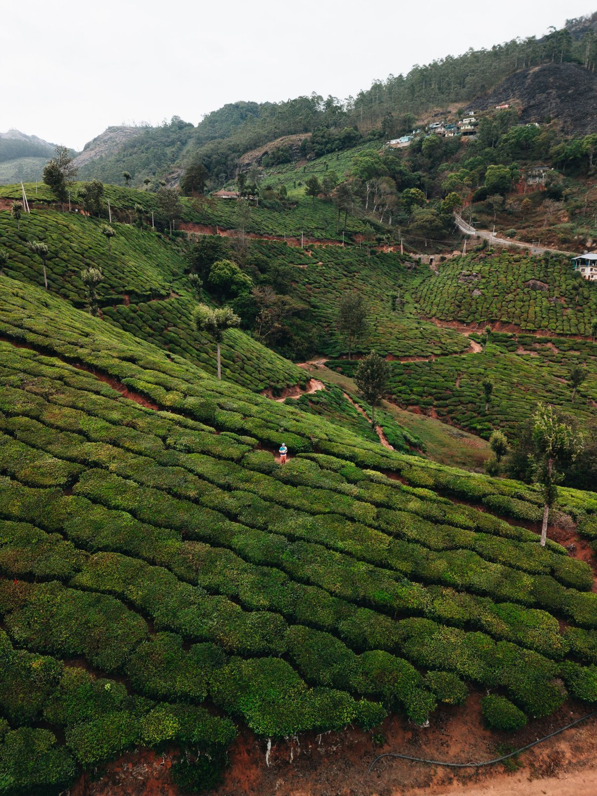

01
Read the official framework
Request the registered bye-laws and current membership information. Confirm that you have the applicable, verified version.
04 / Membership & co-operation
A co-operative is built on participation. Understand the official framework and begin an informed conversation about membership.

Participation with purpose
Membership connects individuals with the society’s co-operative purpose. Eligibility, categories, admission, rights, and responsibilities are governed by the official registered bye-laws and applicable requirements.
Before you take the next step
Request the registered bye-laws and current membership information. Confirm that you have the applicable, verified version.
Ask the society to explain the eligible membership categories and conditions relevant to your circumstances.
Confirm the current procedure, required documents, rights, responsibilities, and any applicable fees directly with the society.
This is an information pathway, not an official admission procedure or application portal.
Good questions to begin with

The eligible categories and conditions must be confirmed against the society’s registered bye-laws. No category is assumed on this demonstration website.
Membership rights, participation, voting provisions, and responsibilities depend on the official bye-laws and applicable requirements. Request the verified text and any current explanatory guidance from the society.
No fee or share amount is stated here because verified financial conditions were not provided. Ask the society for current, official information.
This website does not accept registrations or membership payments. Its enquiry form is a local demonstration and does not send or store information.
The governance page identifies the documents awaiting publication. Verified copies should be requested from the society; this website does not fabricate document downloads.
There is more we can grow
People. Purpose. Possibility.Discover the possibilities of co-operation, innovation, and sustainable development.
Get in touch